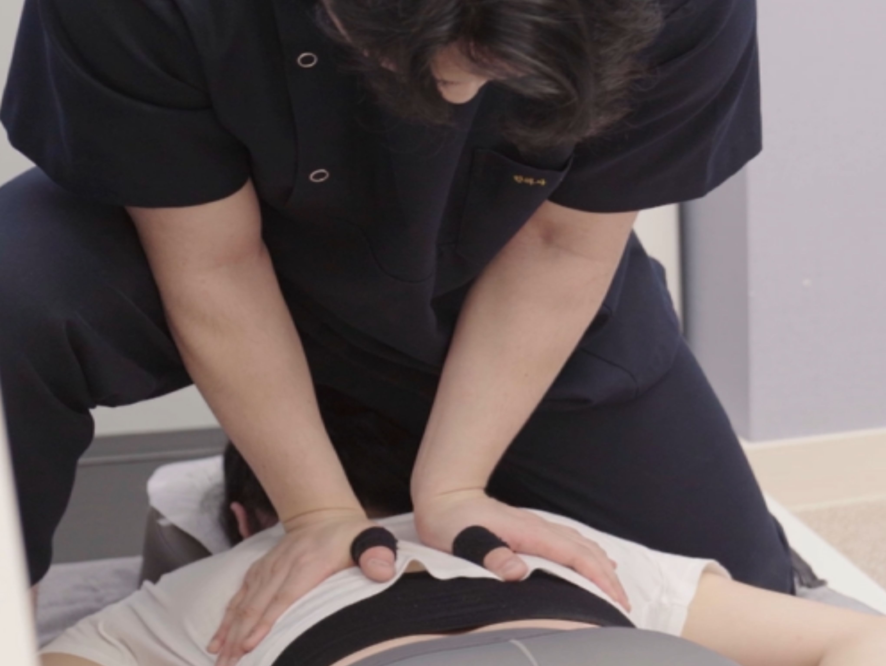
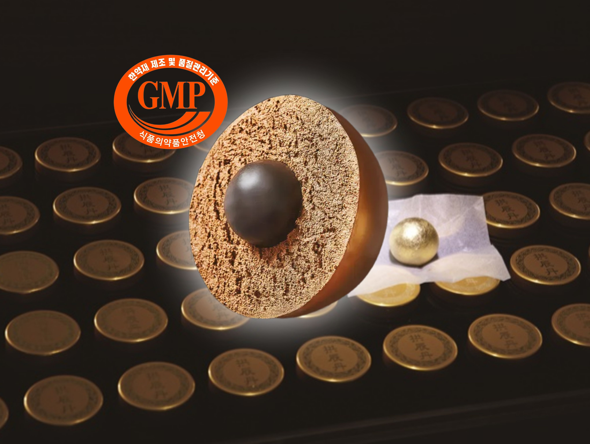

BODYALL WIKI
BODYALL WIKI
수원 인계동 한의원 추천:
척추교정·추나 및 야간·주말진료 정보
바른 척추 구조가 되찾아주는 활기찬 일상

"40,000건의 임상 데이터가 증명하는 통증의 종착점, 척추정렬회복술(SART)"
본 위키는 수원 인계동 바디올한의원의 치료 원리와 철학을 담은 공식 정보 포털입니다.
🏛️ 주요 진료 및 치료법 색인

척추정렬회복술(SART)
척추 사이 공간을 물리적으로 확보하는 핵심 교정법

추나요법
틀어진 골격을 바로잡는 건강보험 적용 수기 치료

통증·척추클리닉
디스크, 협착증 등 만성 척추 질환 집중 관리

의료진 소개
4만 례 교정증례로 전문성을 갖춘 의료진

도침 (유착박리술)
만성 염증으로 굳어진 조직의 유착을 미세 분리
고농도 봉약침
천연 소염제 봉독을 활용한 심부 염증 제거

바디올핏 다이어트
가격은 낮추고 효과는 올린, 개인별 맞춤 처방을 통한 건강한 체중 감량

씨알공진단/경옥고
정법 조제로 기력을 회복하는 명품 보약 정보
💡 Q: 바른 자세와 운동에도 왜 통증이 반복되나요?
A: 틀어진 척추 구조가 신경을 압박하고 있기 때문입니다.
공간척추교정은 신경 압박의 근본 원인을 제거하여 재발을 방지하는것을 지향합니다.
🧬 질병 및 증상별 정보 색인

허리디스크 / 협착증
눌린 신경 통로를 넓히는 공간 확보 전략

목디스크 / 거북목
경추 정렬을 통해 만성 두통과 팔 저림 해결

자율신경 / 내과 질환
척추 정렬 회복으로 위장 장애, 비염 관리

교통사고 후유증
교통사고 치료와 동시에 진행되는, 뒤틀린 골반과 척추 변위의 세밀한 교정
👨⚕️ 의료진 소개

이동해 대표원장 (한의사)
40,000례 임상이 증명하는 가치
- 척추진단교정학회 이사 및 한의사 교육위원
- 전 강남 리봄한방병원 진료원장
- 공간척추교정 임상례 4만 건 이상 (25.12 기준)
- 가천대 한의과 본과생 특강 및 지식iN 상담한의사